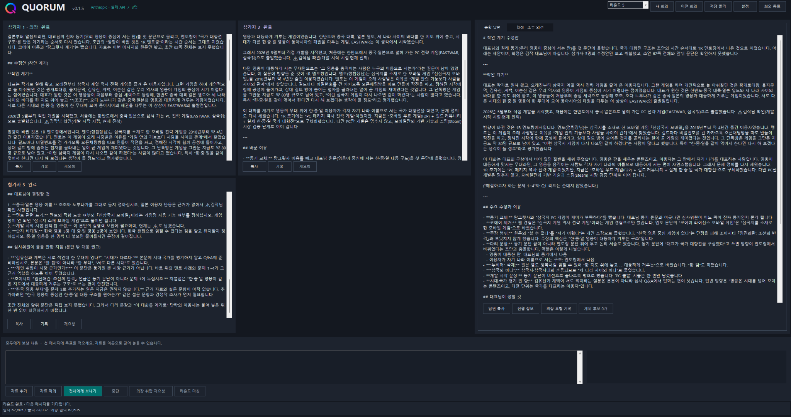

원하는 쿼럼이 되어간다
원하는 답 대신 질문만 늘어놓던 쿼럼을 고치다
· v0.1.4 첫 API 테스트에서 v0.1.5 개선까지처음 연결한 실제 API
쿼럼 v0.1.4에서 처음으로 실제 API를 연결해 회의를 진행했다.
여러 AI가 같은 질문을 받고 각자 의견을 낸다. 그리고 의장 역할을 맡은 AI가 그 의견을 모아 하나의 종합 답변을 만든다. 내가 기대했던 쿼럼의 모습이었다.
하지만 실제로 사용해 보니 결과는 예상과 달랐다.
AI들은 각자의 의견을 냈다. 의장도 그 의견을 읽고 공통점과 차이점을 정리했다. 겉으로 보면 회의는 잘 진행된 것 같았다. 그런데 정작 내가 원했던 최종 답변은 쉽게 나오지 않았다.
의장은 의견을 종합하기보다 내게 다시 질문을 던졌다. 무엇을 선택할지, 어떤 방향으로 갈지, 다음에는 무엇을 논의할지 묻는 식이었다. 질문에 답하면 또 다른 질문이 이어졌다.
분명히 오류가 나서 앱이 멈춘 것은 아니었다. AI들도 각자 맡은 일을 하고 있었다. 하지만 내가 원한 것은 질문이 늘어나는 회의가 아니라, 여러 의견을 검토한 뒤 실제로 사용할 수 있는 답이었다.
말하자면 버그 아닌 버그를 만난 셈이다.
의장은 정리하는 사람일까, 답을 만드는 사람일까
문제를 들여다보니 의장에게 어떤 일을 시켰는지가 중요했다.
기존에는 공통점과 차이점, 참가자별 의견, 소수 의견, 남은 질문 등을 빠짐없이 정리하도록 했다. 그러니 의장은 내가 요청한 결과물을 완성하기보다 회의 내용을 빠짐없이 보고하는 데 집중했다.
사용자가 최종 결정을 한다는 원칙도 마찬가지였다. 중요한 결정을 내가 하는 것은 맞지만, 그 말이 의장이 아무것도 선택하지 말라는 뜻은 아니었다.
글을 수정해 달라고 했으면 여러 의견을 살펴본 뒤 수정된 글을 먼저 보여줘야 한다. 의견이 엇갈렸다면 무엇을 추천하는지와 그 이유를 말해줘야 한다. 꼭 필요한 정보가 빠졌을 때는 질문할 수 있지만, 스스로 판단할 수 있는 부분까지 모두 내게 되돌려줘서는 안 된다.
v0.1.5에서는 의장의 역할을 이 방향으로 고쳤다. 회의록을 길게 늘어놓기보다 사용자가 요청한 종합 답변과 결과물을 먼저 내놓도록 한 것이다.
참가자들에게도 검토 의견만 정리하는 데 그치지 않고, 각자 독립적인 해결안과 대안을 제시하도록 방향을 잡았다. 의장은 그 의견을 바탕으로 추천안을 만들고, 나는 그 결과를 보고 최종적으로 판단한다.
EASTWAR 사업계획서로 다시 시험하다
이번에 쿼럼에 맡긴 작업은 EASTWAR 사업계획서의 ‘착안 계기’를 다듬는 일이었다.
왜 이 게임을 만들고 싶은지, 한국의 역사 영웅들이 이야기의 중심에 서는 게임을 꿈꾸게 된 이유가 더 잘 드러나도록 글을 정리하고 싶었다.
내가 원한 것은 단순히 “이 부분을 앞으로 옮기면 좋겠다”, “이 표현은 검토가 필요하다”는 의견 목록이 아니었다. 그런 의견들을 종합해 실제로 읽을 수 있는 수정안이었다.
v0.1.5 실행화면에서는 Anthropic 실제 API를 연결한 세 참가자의 5라운드 회의가 완료됐고, 의장의 종합 답변이 ‘착안 계기 수정안’으로 시작하는 모습을 확인할 수 있었다.

먼저 완성된 문장을 받아 놓고, 나는 그 문장이 내가 생각한 방향과 맞는지 판단하면 된다. AI들이 나눈 의견을 처음부터 다시 조립하는 것보다 훨씬 원하는 작업 방식에 가까워졌다.
다른 의견도 사라지지 않도록
그렇다고 종합 답변만 남기고 다른 의견을 모두 없애려는 것은 아니다.
쿼럼을 만드는 이유 중 하나는 혼자서는 놓칠 수 있는 시각을 함께 살펴보기 위해서다. 소수 의견이라도 중요한 반론이나 대안이라면 남아 있어야 한다. 다만 실제 이견이 없는데도 형식적으로 소수 의견을 만들어 내거나, 같은 말을 반복해서 답변을 늘릴 필요는 없다.
답변과 회의 진행 정보도 구분했다. 사용자가 가장 먼저 봐야 하는 것은 요청한 결과이고, 그 밖의 기록은 필요할 때 살펴볼 수 있으면 된다. 최종 확정권은 여전히 사용자에게 남겨 둔다.
원하는 쿼럼에 한 걸음 더
이번 화면 하나만으로 모든 요청에서 문제가 해결됐다고 단정할 수는 없다. 질문의 종류가 달라지거나 참가자들의 의견이 크게 엇갈리는 상황에서도, 의장이 적절한 답을 만드는지 계속 시험해야 한다.
그래도 v0.1.4에서 실제 API를 처음 연결하며 발견한 문제를 v0.1.5에서 고치고, 요청한 수정안이 종합 답변의 앞에 나오는 모습까지 확인했다.
여러 AI가 모였다는 사실만으로 좋은 회의가 되는 것은 아니다. 그 회의가 결국 사용자의 질문에 답하고, 다음 작업에 쓸 수 있는 결과를 만들어야 한다.
쿼럼은 아직 만들어가는 중이다. 하지만 하나씩 문제를 발견하고 고치면서, 내가 원했던 쿼럼에 조금씩 가까워지고 있다.